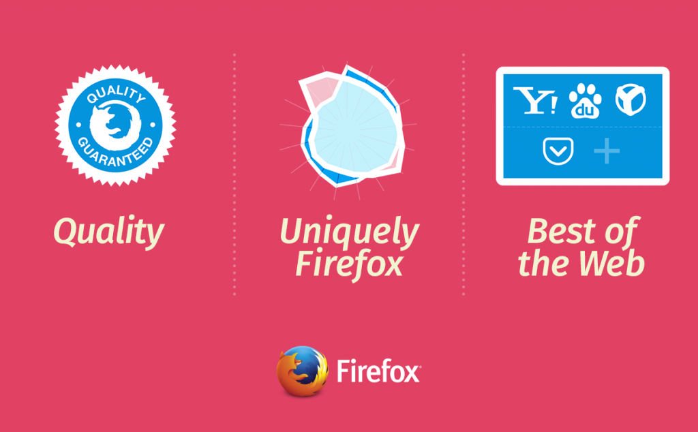

在十多年前，我們決定要提供大家透明、自主、多元選擇的網路，並依循此一使命打造出 Firefox。而從那時候開始，瀏覽器就成為使用者體驗 Web 並控制自己線上生活的關鍵角色。
Mozilla 也因此時時問自己：我們該如何讓 Firefox 越來越好，並能持續讓大家用得開心？我們與大多數的科技公司有所不同，所有人都在開放的環境中工作，且環繞本身策略所著重的三大範圍共享某些實驗性的概念。

絕不妥協的品質
我們首重絕佳的使用者經驗，且要讓 Firefox 符合絕大多數嚴苛的品質與效能標準。而透過 HTML5 影片播放與遊戲效能等的提升，足可體現我們對 Web 經驗的承諾。Mozilla 很快就會將 Firefox 帶入如 iOS 與 Windows 10 等的新平台，期能提供獨立且高效能的經驗，並成為平台預設瀏覽器的絕佳替代方案。
Web 的最佳瀏覽器
Firefox 之所以眾所週知，就是因為能讓使用者完全掌握自己的 Web 經驗，並不斷擴大「現代化瀏覽器」的極限。我們目前於全球擁有更多夥伴與開發者，要向大家突顯 Firefox 創新之處並提供最好的 Web。透過 Firefox 新搜尋策略，我們將推動更多的選擇與創新，另亦根據現有標準打造出新的開放技術，例如與 Telefonica 合作開發的「Firefox Hello」，即是首款將 WebRTC 內建於瀏覽器中的視訊通話工具。Mozilla 另持續率先研究如 WebVR、WebGL、WebRTC 等的開放標準，要讓 Web 進化成為開發平台。
獨一無二的 Firefox
今年稍早，我們向使用者詢問了 Firefox 的獨特之處。相關結果更堅定了我們的觀點：Firefox 必須更為注重效能、信任、品質等特性，以符合 Mozilla 所念茲在茲的使命。
由於 Mozilla 保護使用者的選擇與隱私，因此極為看重使用者對我們的信任。所以我們現正嘗試進一步改善隱私瀏覽與其他特殊功能，並將以單次重大版本總括上述三大範圍的特色。預計今年稍晚就會向 Firefox 使用者分享後續消息。
敬請隨時留意相關發展。